PROJETS ACADÉMIQUES
Audit Stratégique d'Accessibilité
Audit UX, SEO et éco-conception de sites web de grandes métropoles
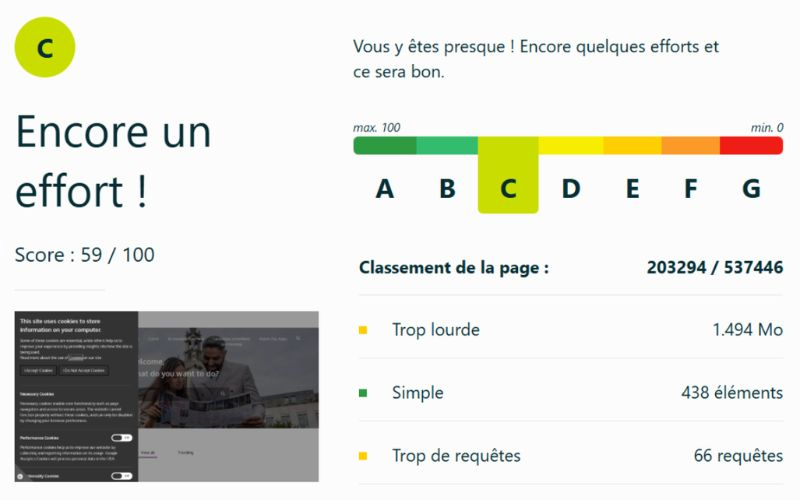
Création d'Identité Visuelle
Création d'un logo, d'un moodboard et de supports visuels pour un magasin
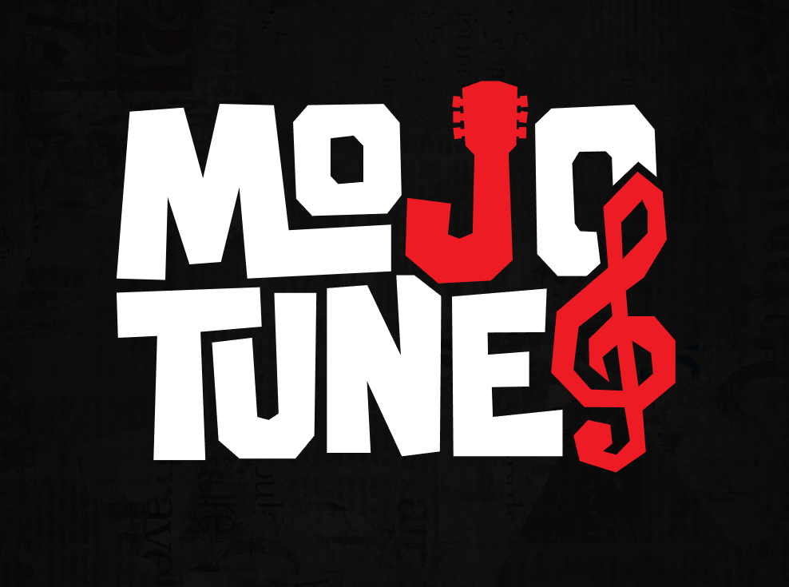
Site Web Horizon Supercars
Design et développement complet d'un site web automobile de prestige
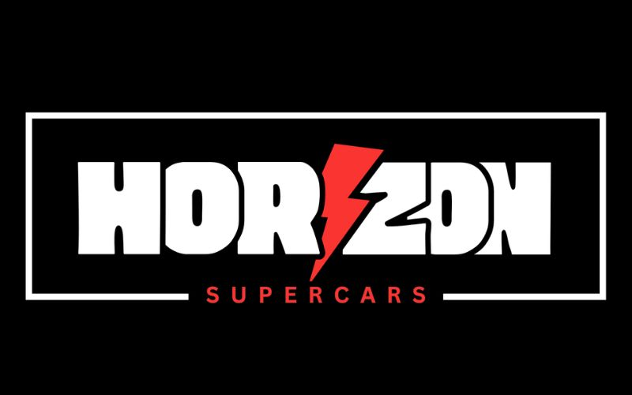
Réalisation d'une Interview Vidéo
Tournage et montage d'une interview format interview
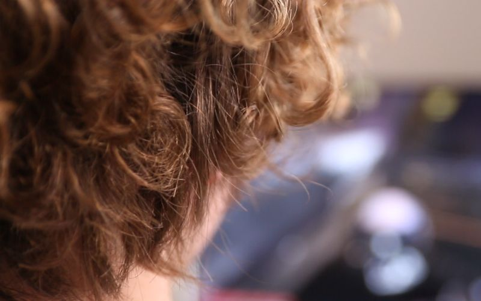
Développement Web PHP/SQL
Conception entière d'un site web avec base de données
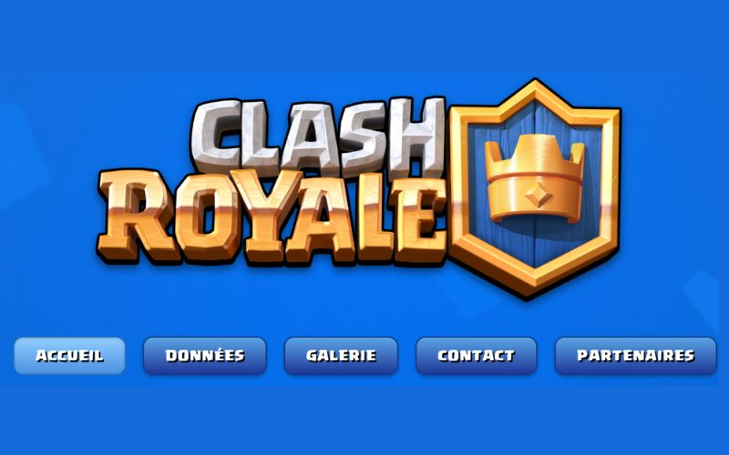
Stratégie de Lancement Marketing
Élaboration d'une stratégie de communication internationale
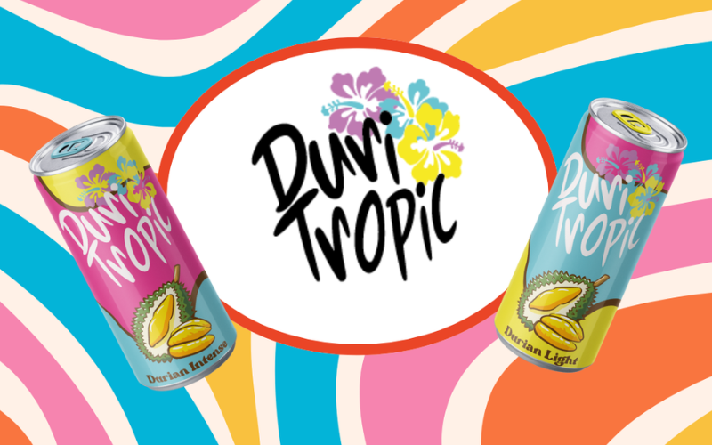
Sound Design & Narratologie
Écriture, mixage et sound design d'un podcast audio
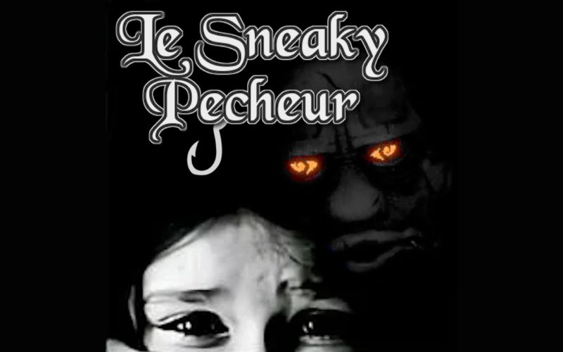
Design d'une Newsletter
Structuration d'informations complexes et mise en page éditoriale
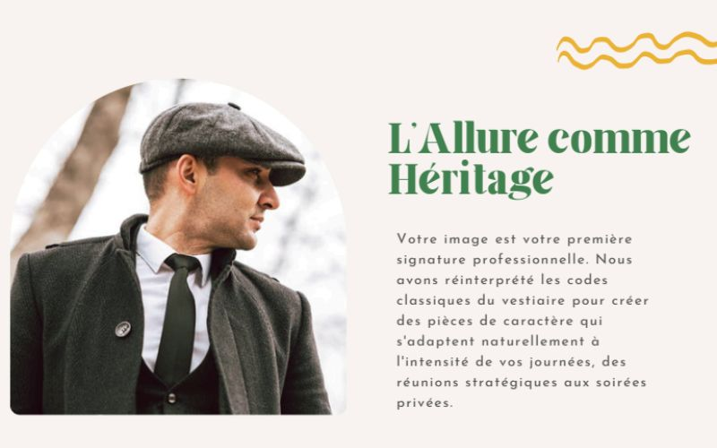
Affiche Publicitaire Sport
Communication visuelle dynamique réalisée en 1 heure
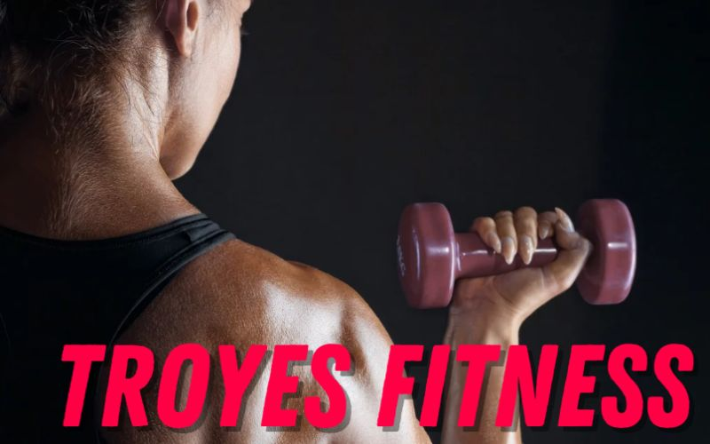
Affiche Prévention Numérique
Design de sensibilisation et synthèse d'information en temps limité
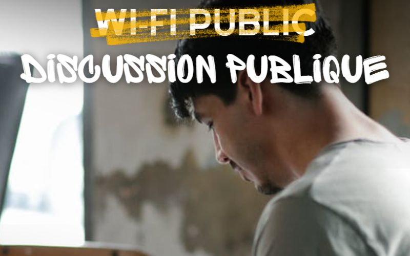
Synthèse Graphique Isotype
Réduction visuelle et design de pictogramme minimaliste
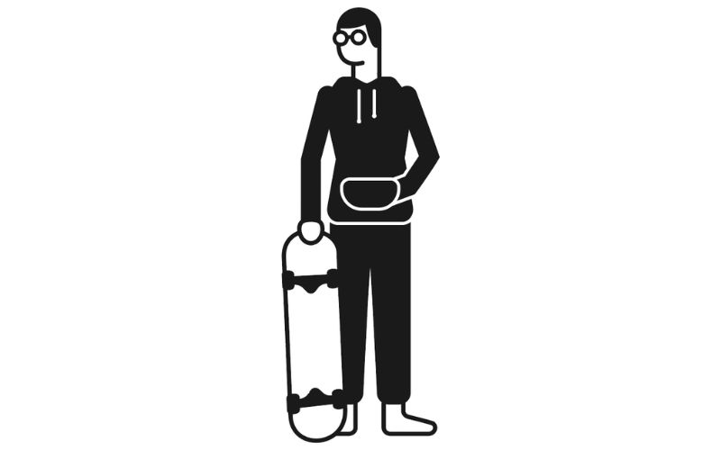
Création de Cartes de Tarot (WIP)
Conception vectorielle d'un jeu de tarot avec un style Art Déco / Vitrail